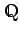
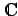

Mengen
| Menge der natürlichen Zahlen | Menge der ganzen Zahlen | ||
|  | Menge der rationalen Zahlen | Menge der reellen Zahlen | |
| Menge der positiven reellen Zahlen | n dimensionsionaler euklidischer Vektorraum | ||
|  | Menge der komplexen Zahlen |
| A ist echte Teilmenge von B | A ist Teilmenge von B | ||
| Differenz zweier Mengen | symmetrische Differenz | ||
| A x B | kartesisches Produkt | Relationenprodukt | |
| x ist Element von A | x ist nicht Element von A | ||
| Kardinalzahl der Menge A | leere Menge, Nullmenge | ||
| Durchschnitt zweier Mengen | Durchschnitt von n Mengen Ai | ||
| Vereinigung zweier Mengen | Vereinigung von n Mengen Ai | ||
| für alle Elemente x | es existiert ein Element x | ||
| Isomorphie von Gruppen | Äquivalenzrelation | ||
| Restklassenaddition | Restklassenmultiplikation | ||
| orthogonale Zerlegung des Raumes H | KRONECKER-Produkt |
| Teilmenge aller x aus X mit der Eigenschaft p(x) | |
| Menge aller x mit der Eigenschaft p(x) | |
| Abbildung T aus dem Raum X in den Raum Y |
| supp | Träger (support) |
| Supremum: Kleinste obere Schranke der nach oben beschränkten, nichtleeren Menge | |
| Infimum: Größte untere Schranke der nach unten beschränkten, nichtleeren Menge | |